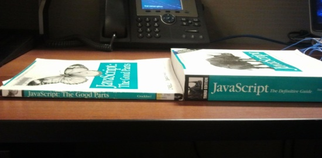

Part 2 of 4: JavaScript
Presented on 8 March 2013.
Press down for video or right for slides.
John-Philip Johansson at Avanade
Tip: Watch in fullscreen. It's in HD.
Be active during the presentation :)
Left: JS - The Good Parts
Right: JS - The Definitive Guide
JavaScript is the world's most misunderstood programming language
Douglas Crockford
Container of properties,
where properties have name and value
var example = {
'requires-quotes': 1,
does_not_require_quotes: 2
};
var one = example['requires-quotes']; // called 'bracket notation'
var two = example.does_not_require_quotes; // called 'dot notation'
example.oops === undefined64-bit floating point
100 === 1e2
var x = NaN;
x !== NaN // NaN always results in false
isNaN(x) === true // This is how you test for NaN
Infinity > 1.79769313486231570e+308
+'123' === 123 // convert string to number
0 == false
NaN == falseMath.floor(3.14) === 316-bit unicode
'hello' === "hello"
'hello'.length === 5
'hell' + 'o' === 'hello'
'' == false'hi'.toUpperCase() === 'HI'Not your typical array
var empty = [];
var numbers = [ 'zero', 'one', 'two', 'three', 'four',
'five', 'six', 'seven', 'eight', 'nine' ];
empty[1] === undefined
numbers[1] === 'one'
empty.length === 0
numbers.length === 10Lot's of methods on the Array object!
Almost typical...
...we'll talk about 'truthy' and 'falsy' later!
var t = true;
var f = false;
t !== f
t === !f
!t === f
The best thing about JavaScript...
Function Statement
function foo() {} // beware: hoistingFunction Expression
var foo = function() {};Reference
Prototype
Object object
Reflection
Delete
JSON
Objects are always passed by reference
var foo = {};
var x = foo;
x.name = "Bar";
foo.name === x.namevar foo = {};
typeof foo.uhoh === 'undefined'
typeof foo.toString === 'function'
var foo = {};
foo.bar = 'hi!';
foo.hasOwnProperty('bar') === true
foo.hasOwnProperty('toString') === falsevar foo = {};
foo.bar = 'hi!';
delete foo.bar; // ok!
delete foo.uhoh; // also ok!
delete foo; // will throw in 'strict mode'JavaScript Object Notation
Often used instead of XML
var json = '{ "result": true, "count": 1}';
var obj = JSON.parse(json); // requires ECMAScript 5
var str = JSON.stringify(obj); // this tooIf not available, use Crockfords JSON2 library.
Function objects
Function prototype
Return value
Function vs. method vs. constructor
Control 'this'
Be controlled by 'this'
Arguments
var foo = function () { return 'hi'; };
foo.hah = function () {
return function() {
return 'omg...';
};
};var func = function() { };
func() === undefined;
var func2 = function() { return; };
func2() === undefined;
var func3 = function() { return 0; };
func3() === 0;Function
var myFunction = function() { };Method
var myObject = {
myMethod: function() { }
};Constructor
var MyClass = function() { };'this' is bound to the global object
var myFunction = function() {
this.hi = 'bang!';
};
window.hi; // 'bang!''this' is bound to the owning object
var myObject = {
hi: 'ping!',
myMethod: function() {
this.hi = 'pong!';
}
};
myObject.hi; // 'ping!'
myObject.myMethod();
myObject.hi; // 'pong!'
myObject['myMethod'](); // alternative way to call'this' is bound to to the new object
var MyClass = function () {
this.member = 'hi';
};
var myObj = new MyClass();
myObj.member === 'hi';// Don't do this!
MyClass();
window.member === 'hi'; // Ooops!var dog = {
sound: 'Arrooooo',
howl: function() { return this.sound; }
};
dog.howl() === 'Arrooooo';Apply & Call
var brave = { sound: 'ROAAAARRRR' };
dog.howl.apply(brave) === 'ROAAAARRRR';
dog.howl.call(brave) === 'ROAAAARRRR';function buttonClicked(){ alert(this.id); }
var button1 = document.getElementById('btn1');
var button2 = document.getElementById('btn2');
button1.onclick = buttonClicked;
button2.onclick = function() { buttonClicked(); };var howMany = function() {
return arguments.length;
};
howMany('hi', 4, window) === 3;var howMany = function() {
return arguments.length;
};
howMany.apply(null, ['hi', 4, window]) === 3;var callConsole = function() {
var params = [].slice.call(arguments);
console.log.apply(console, params);
};
howMany.apply(null, ['hi', 4, window]) === 3;var howMany = function() {
return arguments.length;
};
howMany.call(null, 'hi', 4, window) === 3;Function scope, not block scope
Hoisting
Closure
Block syntax !== block scope
Uses function scope
var foo = function(bar) {
if (bar === 'baz') {
var hi = 'hello';
} else {
var hi = 'uhoh';
}
return hi;
};var foo = function(bar) {
var hi;
if (bar === 'baz') {
hi = 'hello';
} else {
hi = 'uhoh';
}
return hi;
};bar();
function bar() {
console.log('hi');
};var bar;
bar();
bar = function() {
console.log('hi');
};Inner scopes access outer scopes
var secret = 'sssh';
document.getElementById('myDiv').onclick = function() {
this.innerHTML = secret; // the cat's out of the bag!
};Pseudoclassical
Prototypal
Functional
Parts
var Mammal = function(name) {
this.name = name;
};
Mammal.prototype.get_name = function() {
return this.name;
};
var Cat = function(name) {
this.name = name;
};
Cat.prototype = new Mammal();
Cat.prototype.purr = function() { };var myMammal = {
name: 'Henry',
get_name: function() {
return this.name;
};
};
var myCat = Object.create(myMammal);
myCat.name = 'Sonic';
myCat.purr = function() { };Differential inheritance
var mammal = function(species) {
var that = {}; // will be the instance
that.get_name = function() {
return species.name;
};
return that;
};
var cat = function(species) {
var that = mammal(species);
that.purr = function() { };
return that;
};var mammal = function(subSpecies, name) {
subSpecies.get_name = function() {
return name;
};
return subSpecies;
};
var cat = {};
cat = mammal(cat, 'Sonic');// space in functions and comments above
foo( arg );
// all other times use ===
undefinedOrNull == null;
// jQuery objects are prefixed with $
var $elements = $('div');jQuery is not JavaScript, it's just a library!
Read the API docs for fun!
Cross-browser element selection
Borrows syntax from CSS
var $myElement = $('.myClass');
$myElement = $('#myId');
$myElement = $('div');
$myElement = $('input[type="checkbox"]:checked');$myElement.addClass('highlight');
$myElement.hasClass('highlight') === true
$myElement.attr('style', 'background: red');
$myElement.css('background: red');
$myElement.prepend('<h1>Oh hi!</h1>');
$myElement.click(myClickHandler);
$myElement.bind('click', myClickHandler);
$myElement.live('click', myClickHandler);
$myElement.on('click', myClickHandler);
$myElement.one('click', myClickHandler);
$(document).ready(function() { /* document ready */ });
$(function() { /* same thing */ });
$myElement.fadeIn('fast');
$myElement.fadeOut('slow');
$myElement.slideDown();
$myElement.slideUp();More effects available in jQuery UI.
jQuery.get('/api/dogs/1').done(someFunc);
jQuery.getJSON('/api/dogs/1').done(someFunc);
jQuery.post('/api/dogs', theData).done(someFunc);MVVM library
Model View View-Model
Originated from Microsoft, for WPF
Based on MVC (Model View Controller)
Separate the GUI from the back-end
The best library intro ever.
Check for HTML5 features and act accordingly
polyfills: a JS shim that replicates standard API for older browsers
Modernizr.load({
test: Modernizr.geolocation,
yep : 'geo.js',
nope: 'geo-polyfill.js'
});<html class="js no-touch postmessage history boxshadow ...">
<head></head>
<body>
<div class="box"></div>
</body>
</html>.box {
border-bottom: 1px solid #666;
border-right: 1px solid #777;
}
.boxshadow .box {
border: none;
-webkit-box-shadow: #666 1px 1px 1px;
-moz-box-shadow: #666 1px 1px 1px;
box-shadow: #666 1px 1px 1px;
}Don't try this at home!
with (obj) {
a = b;
}Means any of these
a = b;
a = obj.b;
obj.a = b;
obj.a = obj.b;Pronounced 'evil'
eval('var sum = 1 + 4;');& and
| or
^ xor
~ notRemember, JS doesn't have integers!
new Boolean(true) // true
new Number(4) // 4
new String('abc') // 'abc'
new Object() // {}
new Array() // []Remember, functions and constructors are similar
var Thing = function() { this.hello = 'world'; };
var yes = new Thing(); // attaches 'hello' to 'a'
var doh = Thing(); // attaches 'hello' to the global objectCapitilize constructors if you use them
It's an operator...
void 123 === undefinedSeriously, don't try this at home!
var hi = 'hello';
window.hi = 'hello';
hi = 'hello'; // called 'implied global'JS will try to add ; where needed
do not rely on it!
return // ; inserted here!
{
status: true
};abstract boolean break byte case catch char class const continue debugger default delete do double else enum export extends false final finally float for function goto if implements import in instanceof int interface long native new null package private protected public return short static super switch synchronized this throw throws transient true try typeof var volatile void while with
Can still be used with bracket notiation
foo['boolean']; // ok
foo.boolean; // not ok!typeof null === 'object'Usually starting with 0 indicates base 8
parseInt('09') === 0 // not always, could be 9
parseInt('09', 10) === 9 // always supply the radix(NaN = Not a Number)
typeof NaN === 'number'
NaN === NaN // false!
NaN !== NaN // true!
isNaN(NaN) === true
isNaN(Infinity) === false
isFinite(NaN) === false
isFinite(Infinity) === false
isFinite(123) === truetypeof [] === 'object'
[].constructor === Array // true! sometimes...
Array.isArray([]) === true // ECMAScript 5
$.isArray([]) === true // jQueryThese count as 'falsy'
0
NaN
''
null
false
undefinedif (!myValue)
// myValue is one of the above
!!myValue // turns it into booleanconsole.log && console.log('hi'); // prints 'hi' if console.log exists
return myValue || myDefault; // 'myValue' if truthy, else 'myDefault'return (typeof other === 'object' && other) || that; // too cute
return typeof other === 'object' ? other : that; // preferable
1 == '1' // allows type coercion
1 === parseInt('1') // checks type as well
null == undefined
'' == 0for (part in myCar) { // no guarantee on order
if (myCar.hasOwnProperty(part))
// do stuff
}
// or with jQuery:
$.each(myCar, function(part) {
// do stuff
});Read the book JavaScript - The Good Parts
before touching JS code again.
Please? :)
Some videos,
a few articles,
and lots of free libraries
Hilarious 4min presentation of quirkiness!
View it here.
Everything written by Douglas Crockford
Writing Fast, Memory-Efficient JavaScript
Useful JavaScript Libraries and jQuery Plugins - Part 1
Useful JavaScript Libraries and jQuery Plugins - Part 2
JavaScript Events And Responding To The User
Managing JavaScript on Responsive Websites
Debugging JavaScript with Chrome
CoffeeScript or Straight Up Javascript? It's Decision Time
A re-introduction to JavaScript (JS Tutorial)
The rise and rise of JavaScript
Ten Oddities And Secrets About JavaScript
Unobtrusive JavaScript (Wikipedia)
Questions?
Next Friday we'll talk best practices!